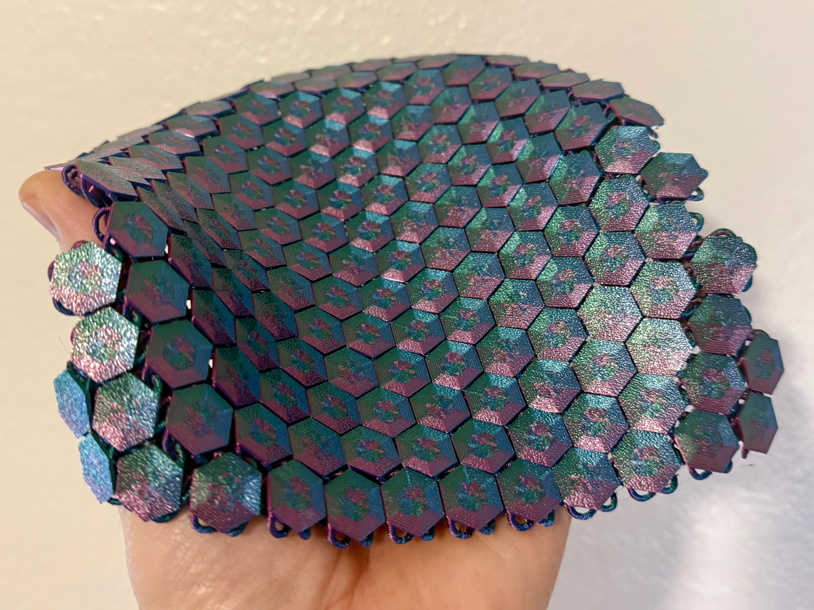
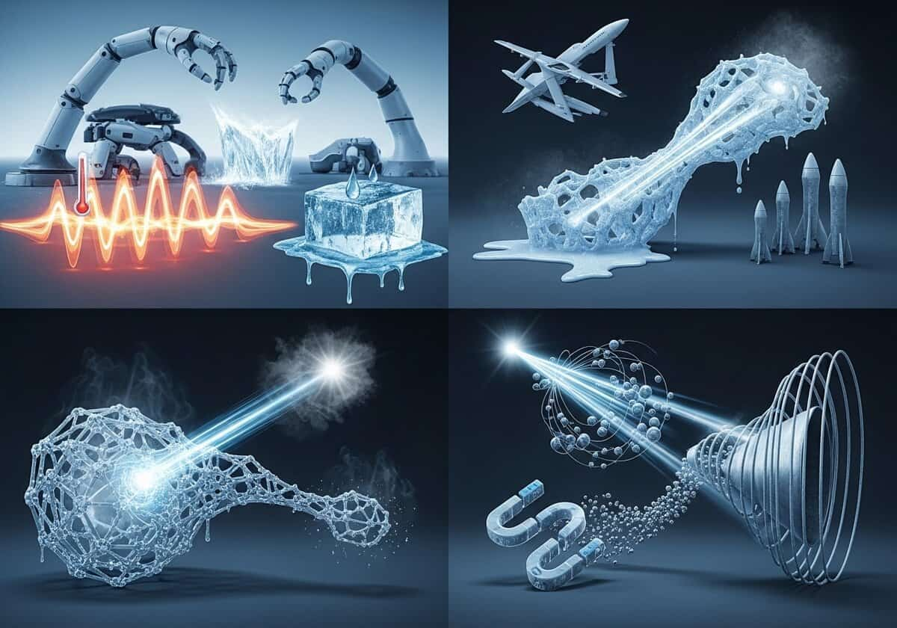
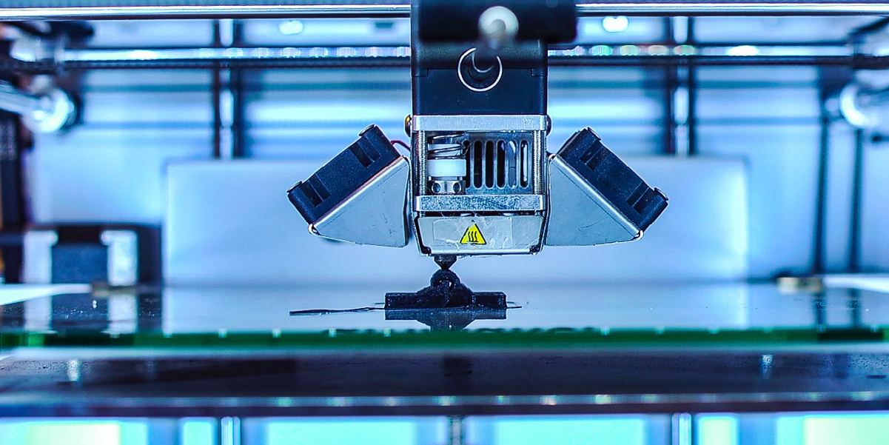
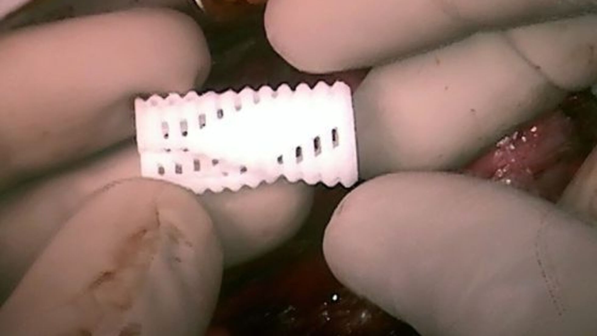
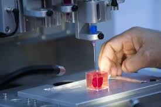
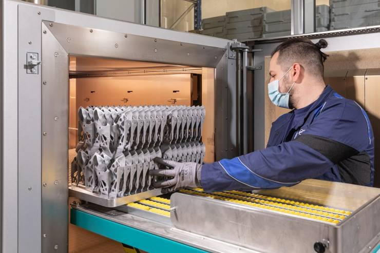
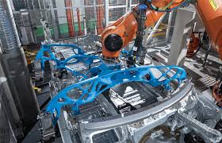
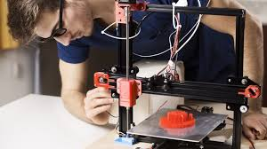

En la impresión 4D los objetos tienen la capacidad de cambiar su forma por sí mismos bajo la influencia
de estímulos externos como: la luz, el calor, la electricidad, el campo magnético, etc.
Al integrar la dimensión del tiempo, los objetos impresos cambian su forma en función de las necesidades y exigencias de la situación,
sin piezas electromecánicas ni partes móviles. Este fenómeno de cambio de forma de los objetos impresos en 3D se basa en la capacidad del
material para cambiar con el tiempo en respuesta a estímulos específicos, y no requiere intervención humana para facilitar el proceso.
Un objeto 4D se imprime utilizando el mismo proceso que la impresión 3D convencional. La impresión tridimensional es una técnica de prototipado
rápido, comúnmente denominada fabricación aditiva, que acumula material capa a capa para crear objetos tridimensionales. La diferencia es que
la tecnología de impresión 4D utiliza materiales programables y avanzados que realizan diferentes funciones al aplicar agua caliente, luz o
electricidad.
Los materiales para impresión 4D
▪ Materiales termorreactivos: estos materiales funcionan según el mecanismo del efecto de
memoria de forma (SME). La mayoría de los investigadores prefieren los SMP porque es fácil imprimir en estos materiales. Se forman y
deforman cuando se les aplica calor o energía térmica como estímulo.
▪ Materiales sensibles a la humedad: en esta categoría se clasifican los materiales que
reaccionan en contacto con el agua o la humedad. El hidrogel es uno de los materiales inteligentes que entran en esta categoría, ya que
reacciona enérgicamente con el agua.
▪ Materiales foto/electro/magneto sensibles: estos materiales reaccionan con la luz,
la corriente y los campos magnéticos. Por ejemplo, cuando se aplica corriente a un objeto que contiene etanol, éste se evapora, lo
que aumenta así su volumen y expande la matriz general. Las nanopartículas magnéticas se incrustan en el objeto impreso para obtener
un control magnético del mismo.
Desarrollo actual de productos con impresión 4D
▪ Sector aeroespacial: La industria aeroespacial es uno de los campos con mayor potencial
para la impresión 4D. La NASA desarrolló una malla metálica flexible que puede utilizarse como escudo para antenas espaciales o en trajes
de astronautas. Este material combina propiedades como reflectividad, control térmico, plegabilidad y resistencia a la tracción,
permitiendo que se adapte a diferentes formas sin perder su funcionalidad. También se investigan componentes de admisión de aire
fabricados con fibra de carbono programable para mejorar la refrigeración de motores y reducir el peso de las aeronaves. Además,
empresas como Airbus estudian el uso de metamateriales reactivos para sustituir bisagras y actuadores tradicionales, disminuyendo
significativamente el peso de los vehículos espaciales y aumentando su eficiencia.



▪ Sector de la salud: La impresión 4D permite desarrollar dispositivos médicos capaces de adaptarse al crecimiento y
las necesidades del paciente. Un ejemplo son las férulas para vías respiratorias que pueden expandirse automáticamente a medida que
crece un niño. Investigadores de la Universidad de Michigan utilizaron esta tecnología para crear implantes destinados a tratar
problemas respiratorios graves en bebés. Además, la combinación de células vivas y estructuras impresas en 4D abre nuevas posibilidades
para la bioimpresión de órganos y tejidos capaces de crecer y adaptarse dentro del cuerpo humano, lo que podría revolucionar la medicina
regenerativa y reducir la necesidad de trasplantes.


▪ Moda y confección: La impresión 4D está transformando el diseño de prendas y calzado mediante productos capaces de cambiar
su forma según las necesidades del usuario. Un ejemplo es el proyecto desarrollado por diseñadores en colaboración con el MIT, que creó zapatos
con propiedades de autoensamblaje. Estos se fabrican a partir de patrones bidimensionales impresos sobre tejidos elásticos que adoptan
automáticamente una forma tridimensional después de la impresión. También se investiga el desarrollo de ropa inteligente capaz de reaccionar
a cambios climáticos o a la actividad física de quien la utiliza.
▪ Industria automotriz: Los fabricantes exploran materiales adaptativos que pueden mejorar la eficiencia y la personalización
de los vehículos. BMW, en colaboración con el MIT, desarrolló estructuras de silicona autoinflables impresas en 4D capaces de modificar su
forma y adaptarse a diferentes necesidades. Estas tecnologías podrían utilizarse en componentes internos y externos de los automóviles para
aumentar el confort, reducir peso y optimizar el rendimiento.



✔️ Ventajas
Entre sus principales beneficios destacan el autoensamblaje de estructuras, la adaptación automática a
cambios del entorno, el desarrollo de dispositivos médicos inteligentes y la reducción de costos de fabricación, transporte y mantenimiento.
Gracias a estas características, la impresión 4D representa una evolución significativa de la impresión 3D y abre nuevas posibilidades para
industrias que requieren productos dinámicos y funcionales.
❌ Desventajas
La impresión 4D todavía se encuentra en una fase experimental, lo que hace que su principal desventaja
sea el alto costo de desarrollo y la limitada disponibilidad de materiales inteligentes. Además, su uso requiere gran complejidad técnica,
ya que es difícil predecir y controlar cómo reaccionarán los materiales ante distintos estímulos. También puede ser un proceso más lento
que otras tecnologías y aún no está listo para una producción masiva o uso comercial generalizado.
El futuro de la impresión 4D
La tecnología de impresión 4D todavía se encuentra en una fase muy temprana de investigación y desarrollo.
Actualmente, los únicos lugares donde es probable que se exhiban formas impresas en 4D son los laboratorios y las instalaciones de creación de
prototipos, así como algunas exposiciones de arquitectura e instalaciones artísticas.
El futuro se presenta prometedor y, al igual que con la impresión 3D, la lista de posibles aplicaciones es enorme. El uso de estos materiales
inteligentes podría revolucionar el mundo de los materiales tal como lo conocemos.
Conclusión
La impresión 4D es una tecnología emergente con potencial para revolucionar la fabricación al permitir la creación de dispositivos adaptativos. La capacidad de crear objetos capaces de autoensamblarse, autorrepararse o cambiar de forma en respuesta a estímulos externos podría tener importantes aplicaciones en campos tan diversos como la medicina, la industria aeroespacial o la arquitectura.
Si bien aún quedan desafíos por superar antes de que se convierta en una tecnología de uso generalizado, los beneficios potenciales la convierten en un área de gran interés tanto para investigadores como para fabricantes.